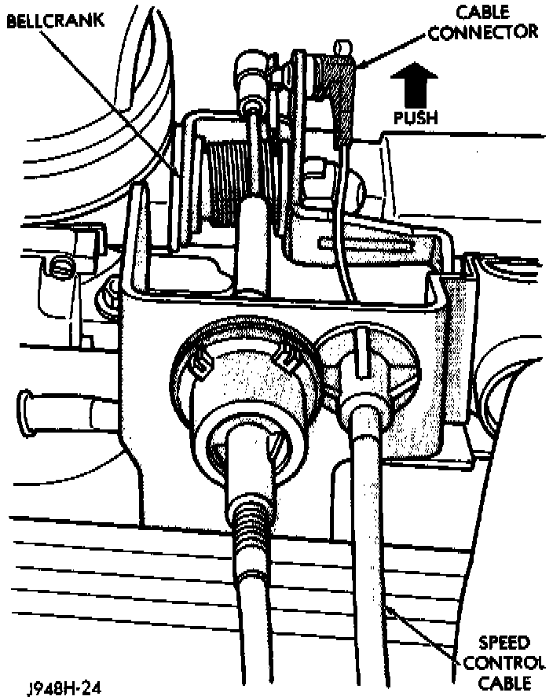

Cruise Control Servo Cable: Service and Repair
REMOVAL1. Disconnect negative battery cable at battery.
Servo Cable To Bellcrank-Removal/Install:

2. Using finger pressure only, remove speed control cable connector at throttle body bellcrank pin by pushing connector off the bellcrank towards the drivers side of vehicle. DO NOT try to pull connector off perpendicular to the bellcrank pin. Connector will be broken.
3. Remove cable from cable guide at top of valve cover.
4. Squeeze 2 tabs on sides of speed control cable at throttle body mounting bracket (locking plate) and push out of bracket.
5. Remove servo cable from servo. Refer to Speed Control Servo removal and installation.
INSTALLATION
1. Install end of cable to speed control servo. Refer to Speed Control Servo removal and installation.
2. Install cable into throttle body mounting bracket (snaps in).
3. Install speed control cable connector at throttle body bellcrank pin (snaps on).
4. Connect negative battery cable at battery